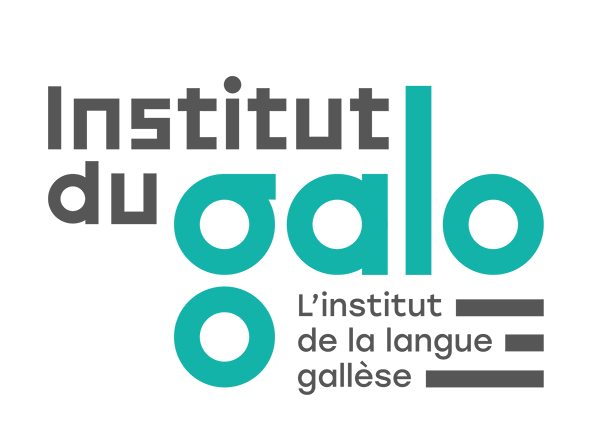

L’Institut du Galo est l’organisme chargé de promotion et de transmission du gallo. Sa mission principale est de soutenir l’enseignement, la recherche et la valorisation, en collaboration avec les institutions, associations et collectivités.
Depuis sa création en 2017, l’Institut développe des outils pédagogiques, des ressources et des méthodes adaptées pour faciliter l’apprentissage du gallo, tout en accompagnant les enseignants et les formateurs.
contact@institutdugalo.bzh
12 rue Texier
35000 Rennes